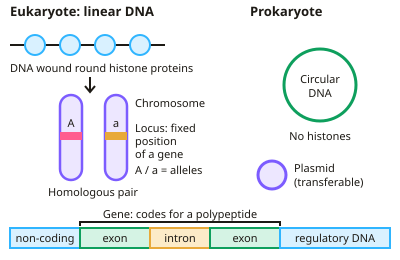

A-level Biology Year 12 · Topic 4
Genetic information, variation and relationships between organisms
This topic links genetic information to variation, evolution and the way we classify life.
We start with genes and chromosomes and how DNA is turned into proteins, then see how mutation and meiosis create genetic diversity.
Finally we look at natural selection and speciation, how species are named and classified using molecular evidence, and how ecologists measure biodiversity in the field.
- 8 subtopics
- 269 questions
- Free: 4.1 notes and 10 questions
In this topic
- 4.1DNA, genes and chromosomesFree below · 26 questions
- 4.2DNA and protein synthesisOpen in Full Marks · 27 questions
- 4.3Genetic diversity: mutation and meiosisOpen in Full Marks · 25 questions
- 4.4Genetic diversity, adaptation and biodiversityOpen in Full Marks · 23 questions
- 4.5Species, binomial nomenclature and the taxonomic hierarchyOpen in Full Marks · 31 questions
- 4.6Phylogeny, the three domains and five kingdoms, and molecular evidence for relationshipsOpen in Full Marks · 36 questions
- 4.7Natural selection, evidence for evolution and speciationOpen in Full Marks · 34 questions
- 4.8Investigating biodiversity: random sampling, transects, mark-release-recapture and Simpson's indexOpen in Full Marks · 67 questions
4.1 · Free notes
DNA, genes and chromosomes

Key points
- A gene is a sequence of DNA nucleotides that codes for the amino acid sequence of a polypeptide, or a functional RNA.
- In eukaryotes, DNA is linear, wound around histone proteins, and organised into chromosomes in the nucleus; much of the DNA is non-coding, including introns within genes and regions that regulate gene expression.
- In prokaryotes, DNA is a shorter, circular molecule, not associated with histones, and often carries extra plasmids — small circular DNA that can be transferred between bacteria.
- A gene may have different versions called alleles, differing in one or a few bases, giving rise to different versions of the polypeptide it codes for.
- The locus is the fixed position of a gene on a chromosome.
In more detail
- Non-coding DNA: in eukaryotes much DNA does not code for polypeptides, including introns within genes and multiple repeats between genes.
- Genome vs proteome: the genome is the complete set of genes in a cell; the proteome is the full range of proteins that the cell is able to produce.
- Homologous chromosomes: a pair of chromosomes, one maternal and one paternal, with the same genes at the same loci, though possibly different alleles.
- Mitochondria and chloroplasts contain short, circular DNA without histones, like prokaryotes, supporting the endosymbiotic theory.
Practice
DNA, genes and chromosomes: 10 questions
Pick an answer to check it, or open the answer for the explanation.
1. What is a gene?
- A whole chromosome
- A sequence of DNA that codes for a polypeptide or functional RNA
- A type of protein
- A cell organelle
Show answer
B: A sequence of DNA that codes for a polypeptide or functional RNA. Genes are the units of heredity.
2. How does prokaryotic DNA differ from eukaryotic DNA?
- It is linear and wrapped around histones
- It is circular, shorter, and not associated with histones
- It has no bases
- It is found in a nucleus
Show answer
B: It is circular, shorter, and not associated with histones. Bacteria also often carry additional plasmids.
3. What is an allele?
- A different version of a gene
- A type of chromosome
- An enzyme
- A section of non-coding DNA
Show answer
A: A different version of a gene. Alleles arise from differences in the base sequence of a gene.
4. What is a locus?
- A type of mutation
- The fixed position of a gene on a chromosome
- A non-coding region
- An amino acid
Show answer
B: The fixed position of a gene on a chromosome. Each gene has one locus, though it can have multiple alleles.
5. What is a plasmid?
- A eukaryotic organelle
- Small circular DNA found in some prokaryotes, separate from the main chromosome
- A type of RNA
- A cell membrane protein
Show answer
B: Small circular DNA found in some prokaryotes, separate from the main chromosome. Plasmids can carry genes such as antibiotic resistance and be transferred between bacteria.
6. Where in a eukaryotic cell is most DNA found?
- Mitochondria
- The nucleus, wound around histones
- Ribosomes
- The cell membrane
Show answer
B: The nucleus, wound around histones. Chromatin consists of DNA and histone proteins.
7. What is an intron?
- A coding section of a gene
- A non-coding section within a gene
- A type of protein
- A whole chromosome
Show answer
B: A non-coding section within a gene. Introns are removed from mRNA during splicing.
8. What is the main function of histones in eukaryotic chromosomes?
- They code for the amino acids in proteins
- DNA wraps around them so it can be tightly packaged
- They join the two DNA strands together
- They copy DNA during replication
Show answer
B: DNA wraps around them so it can be tightly packaged. Histones are proteins that DNA is wound around, which packages the very long linear molecule into the nucleus. They do not code for proteins or replicate DNA.
9. How many DNA molecules are in the nucleus of a human body cell that has not yet replicated its DNA?
- 23
- 92
- 46
- 2
Show answer
C: 46. Each of the 46 linear chromosomes is one DNA molecule before replication. 92 would be the number of chromatids after replication; 23 is the haploid number.
10. A bacterium gains a plasmid carrying an antibiotic-resistance gene from another bacterium. What is the likely result?
- Its main chromosome becomes linear
- It gains a nucleus to protect the gene
- Its genes are all replaced by new alleles
- It can now survive that antibiotic
Show answer
D: It can now survive that antibiotic. The plasmid gene is expressed in the recipient, which therefore becomes resistant. Its main chromosome stays circular and it gains no nucleus.
Keep going in Full Marks
Full Marks has 26 questions on DNA, genes and chromosomes (16 more than here), set out in practice levels. You also get notes and 3D models for all 8 subtopics of Genetic information, variation and relationships between organisms, plus games, timed exams and past papers.
On your exam board
- AQATopic 4: Genetic information, variation and relationships between organisms
- OCR ATopic 2.1.3: Nucleotides and nucleic acids, Topic 2.1.6: Cell division, cell diversity and cellular organisation, Topic 4.2.1: Biodiversity, Topic 4.2.2: Classification and evolution
- OCR BTopic 3.1: Cell division, Topic 3.2: Development of organisms, Topic 3.4: Biodiversity, classification and evolution
- EdexcelTopic 1: Biological molecules, Topic 2: Cells, viruses and reproduction of living things, Topic 3: Classification and biodiversity
- CambridgeTopic 6: Nucleic acids and protein synthesis